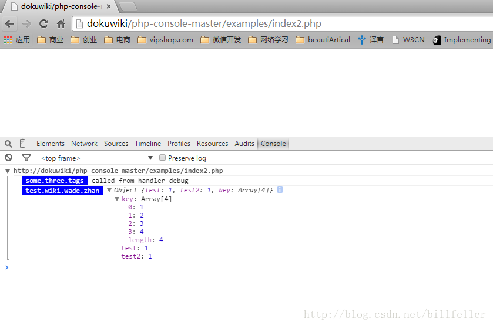
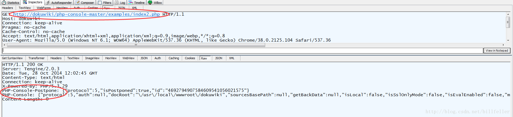
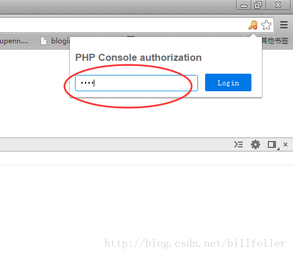

PHP Console工具使用分享
PHP Console：https://github.com/barbushin/php-console#php-console-server-library
功能介绍
PHP Console工具和FirePHP功能相似，提供以下功能：
Handle PHP errors, dump variables, execute PHP code remotely in Google Chrome
Demo
首先在Chrome中安装PHP Console插件:
其次在PHP代码中引入PHP Console库，然后调用输出相应调试信息：
如下例index2.php：
1 2 3 4 5 6 7 8 9 10 11 12 13 14 15 16 17 | <?php require_once(__DIR__ . '/../src/PhpConsole/__autoload.php'); // Call debug from PhpConsole\Handler$handler = PhpConsole\Handler::getInstance();$handler->start();$handler->debug('called from handler debug', 'some.three.tags'); $array = array( 'test' => 1, 'test2' => 1, 'key' => array( 1, 2, 3, 4, ), );$handler->debug($array, 'test.wiki.wade.zhan'); |
输出调试信息到控制台，如下图：

原理介绍
PHP Console工具通过将调试信息输出到http响应头PHP-Console，然后PHP Console插件分析响应头PHP-Console字符串输出相应调试信息。

附录
PHP Console提供了通过密码来保护调试信息的功能，如下例，在服务器端设置密码：
1 2 3 4 5 6 7 8 9 10 11 12 13 14 15 16 17 18 19 20 21 | <?php require_once(__DIR__ . '/../src/PhpConsole/__autoload.php'); $password = 'test';$connector = PhpConsole\Connector::getInstance();$connector->setPassword($password); // Call debug from PhpConsole\Handler$handler = PhpConsole\Handler::getInstance();$handler->start();$handler->debug('called from handler debug', 'some.three.tags'); $array = array( 'test' => 1, 'test2' => 1, 'key' => array( 1, 2, 3, 4, ), );$handler->debug($array, 'test.wiki.wade.zhan'); |
此时可以看到只有当客户端输入正确的密码：

此时响应头部才会输出相应的调试信息：
1 2 3 4 5 6 7 8 9 | HTTP/1.1 200 OKServer: Tengine/2.0.3Date: Tue, 28 Oct 2014 12:36:04 GMTContent-Type: text/htmlConnection: keep-aliveX-Powered-By: PHP/5.3.29PHP-Console-Postpone: {"protocol":5,"isPostponed":true,"id":"6957661441226218549514727634"}PHP-Console: {"protocol":5,"auth":{"publicKey":"bf802ef9f6d61a5d4a720892a79bf8285d92c31c2a99be2931b504dc54eeb209","isSuccess":true},"docRoot":"\/usr\/local\/wwwroot\/dokuwiki","sourcesBasePath":null,"getBackData":null,"isLocal":false,"isSslOnlyMode":false,"isEvalEnabled":false,"messages":[{"type":"debug","tags":["some","three","tags"],"data":"called from handler debug","file":null,"line":null,"trace":null},{"type":"debug","tags":["test","wiki","wade","zhan"],"data":{"test":1,"test2":1,"key":[1,2,3,4]},"file":null,"line":null,"trace":null}]}Content-Length: 0 |